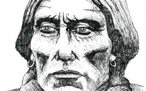

Bleachwave
The Website of Charlie Thomason

Charlie Thomason is an Artist and Web Developer from Chicago. He has a M.A. in New Media Studies from DePaul University and a B.F.A. in Art Studio from the University of Kentucky. Charlie’s first self-published photography book, Open Range: From Monument Valley to the Mojave Desert, was released in 2012.
As a Web Developer, Charlie is most proficient in HTML5, CSS3, Responsive layouts, WordPress theme design, Adobe Creative Suite, and online marketing technologies. As an Artist, Charlie's primary mediums are oil and watercolor paints, ink brush, and digital photography.
Web Portfolio
-
 UChicago iTunes & Social Media
Tools: iTunes U, Content Management
UChicago iTunes & Social Media
Tools: iTunes U, Content Management
Client: The University of Chicago
Year: 2011
 Recycled Film
Recycled Film UChicago News
UChicago News charliethomason v.1
charliethomason v.1 Troma Project
Troma Project The Week Behind
The Week Behind Recycled Cinema
Recycled Cinema @ Your Library
@ Your Library 'Kansas' Documentary
'Kansas' Documentary CharlieChicago
CharlieChicagoArt Gallery
-
 Quanah Parker Medium: Ink on paper
Year: 2012 -
 Frederic Chopin
Medium: Watercolor & ink on paper
Frederic Chopin
Medium: Watercolor & ink on paper
Year: 2012 -
 Mingo Jack (Cover)
Medium: Oil on panel; Book cover
Mingo Jack (Cover)
Medium: Oil on panel; Book cover
Year: 2010 -
 Motorcycle Guitarist
Medium: Oil on paper
Motorcycle Guitarist
Medium: Oil on paper
Year: 2011 -
 Eternal Sunshine
Medium: Watercolor & ink on paper
Eternal Sunshine
Medium: Watercolor & ink on paper
Year: 2012 -
 Self-Portrait
Medium: Graphite on paper
Self-Portrait
Medium: Graphite on paper
Year: 2007 -
 Melting Doge
Medium: Oil on paper
Melting Doge
Medium: Oil on paper
Year: 2010 -
 Corman and Poe
Medium: Oil on canvas
Corman and Poe
Medium: Oil on canvas
Year: 2007 -
 Green Rachel
Medium: Graphite on paper
Green Rachel
Medium: Graphite on paper
Year: 2007 -
 Fritz Lang
Medium: Oil on canvas
Fritz Lang
Medium: Oil on canvas
Year: 2007 -
 Nine to Five (Triptych)
Medium: Mixed media on panel
Nine to Five (Triptych)
Medium: Mixed media on panel
Year: 2007 -
Vincent Price Medium: Ink on paper
Year: 2006 -
 American Nightmare
Medium: Ink on paper
American Nightmare
Medium: Ink on paper
Year: 2006 -
Mark David Chapman Medium: Ink on paper
Year: 2006 -
 Mantis Madness
Medium: Ink on paper
Mantis Madness
Medium: Ink on paper
Year: 2006
Connect


Email Charlie at:
thomason.charlie [at] gmail [dot] com